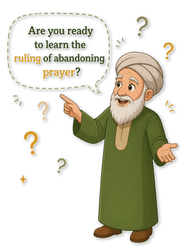
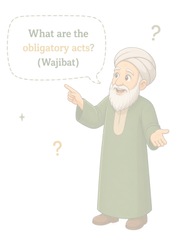

Step 7
Pillars of Prayer (Arkan)

Step 8
Obligatory Acts (Wajibat)

A sacred path toward mastering the cornerstone of faith. Walk
through each station with intention and reflection.


“May Allah make your prayers full of peace, sincerity, and light.”